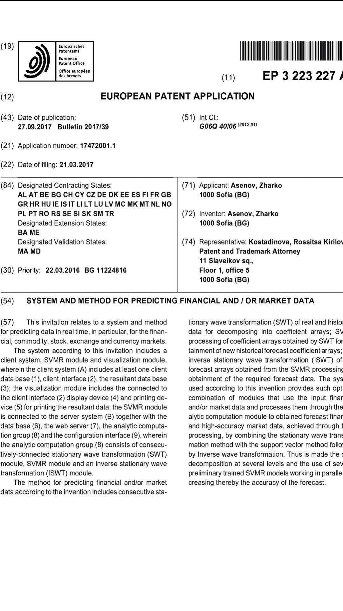

Tempus is a project aimed at utilizing cutting edge methods to model time series and solve regression problems. In it's core Tempus uses an advanced SVM implementation that fixes several inconsistencies of the original theory by prof. Vapnik and Chervonenkis to achieve forecast precision better than any other algorithm currently available in the field of statistical learning. This is accomplished by calculating the ideal or reference kernel matrix for the provided labels and produce a kernel function fitted as tightly as possible to it - in order to extract all relevant information in the data. Having the ideal kernel matrix available for a dataset allows this SVM implementation to nest several support vector machines into each other as kernel functions, or have an another statistical model produce the kernel function (eg. gradient boosted trees using LightGBM or a temporal fusion transformer using Torch). Several conventional kernel methods are also implemented as part of Tempus, such are a fast variant of the Path Kernel (Baisero et al.), the Radial-basis function, the Global Alignment Kernel (Cuturi et al.), etc.
For this implementation there is no need to tune the regularization cost parameter, epsilon thresholding or do tuning of kernel hyperparameters using a train-predict validation cycle. The model produced is optimal for the available data and hardware resources configured.
Beside nesting of kernel functions, three other methods of scaling (or ensembling) are provided; in the spectral domain using a modified online EMD and VMD, in the time domain or dynamic time slicing and sequential residuals or gradient boosting - the last one is work in progress. Each SVM model can have multiple internal weight layers - configured manually according to the complexity of the trained data. Weights are produced by a combination of a linear IRWLS solver with MAGMA's GESV RBT and a non-linear (A+bT)x=bm matrix optimizer - Pruned BiteOpt which is based on the CMA-ES algorithm, but interfaces to PETSc, MAGMA, CUSolver and pruned PRIMA are also available.
Feature alignment and outlier filtering of the input data is implemented using the BACON algorithm, HDBScan and simple Euclidean distance works good enough. This allows Tempus to efficiently model extremely noisy data. Feature selection is done by measuring normalized columns correlation to the labels trained.
An online learning mode is in the works.
Tempus is a project that unites researchers and engineers from several countries and academic institutions in order to exchange ideas, learn and achieve the best performance in time series analysis using the latest methods in statistics and signal processing. It makes use of HPC technologies such are OpenCL, OpenMP, CUDA and MPI to deliver optimal performance over highly parallel systems.
It consists of several libraries:
cd ~/tempus-core; mkdir build; cd build ; ccmake .. and choose the appropriate options.
To run the app you need to configure PostgreSQL database, the connection string is configurable in app.config, and install the dependencies specified in doc/INSTALL.
Note: Change the value of SQL_PROPERTIES_LOCATION app.config variable according to the location of PSQL files on your disk (default is SVRRoot/SVRPersist/postgres).
Tempus can use a Postgresql database as data provider or DuckDB - an in-process columnar database with Postgresql like syntax. Choose DuckDB if a single Tempus process will be using the database and performance is important by setting the approprite CONNECTION_STRING in app.config.

Patent 17472001.1 is covering a scalable support vector regression service using wavelet decomposition of financial index data on the territory of European continent.Copyright (c) 2025, Žarko Asen
Redistribution and use in source and binary forms, with or without modification, are permitted provided that the following conditions are met:
1. Redistributions of source code must retain the above copyright notice, this list of conditions and the following disclaimer.
2. Redistributions in binary form must reproduce the above copyright notice, this list of conditions and the following disclaimer in the documentation and/or other materials provided with the distribution.
3. All advertising materials mentioning features or use of this software must display the following acknowledgement:
This product includes software developed by the Tempus project.
4. Neither the name of the copyright holder nor the names the copyright holder nor the names of its contributors may be used to endorse or promote products derived from this software without specific prior written permission.
THIS SOFTWARE IS PROVIDED BY COPYRIGHT HOLDER "AS IS" AND ANY EXPRESS OR IMPLIED WARRANTIES, INCLUDING, BUT NOT LIMITED TO, THE IMPLIED WARRANTIES OF MERCHANTABILITY AND FITNESS FOR A PARTICULAR PURPOSE ARE DISCLAIMED. IN NO EVENT SHALL THE TEMPUS PROJECT BE LIABLE FOR ANY DIRECT, INDIRECT, INCIDENTAL, SPECIAL, EXEMPLARY, OR CONSEQUENTIAL DAMAGES (INCLUDING, BUT NOT LIMITED TO, PROCUREMENT OF SUBSTITUTE GOODS OR SERVICES; LOSS OF USE, DATA, OR PROFITS; OR BUSINESS INTERRUPTION) HOWEVER CAUSED AND ON ANY THEORY OF LIABILITY, WHETHER IN CONTRACT, STRICT LIABILITY, OR TORT (INCLUDING NEGLIGENCE OR OTHERWISE) ARISING IN ANY WAY OUT OF THE USE OF THIS SOFTWARE, EVEN IF ADVISED OF THE POSSIBILITY OF SUCH DAMAGE.